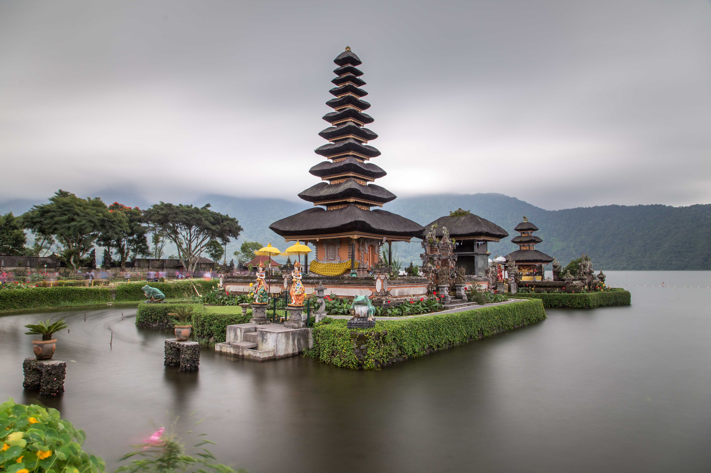

Bali 🕉️

🏝️ Bali: isola indonesiana famosa per i suoi templi, risaie, yoga retreat e onde perfette per il surf. Cultura ricca e spiritualità ovunque.
- 🎾 Attività: meditazione, surf, visite ai templi, escursioni nelle risaie
- 🍳 Cibo tipico: nasi goreng, sate, babi guling
- ⭐ Luoghi iconici: Ubud, Tempio di Tanah Lot, Spiaggia di Seminyak